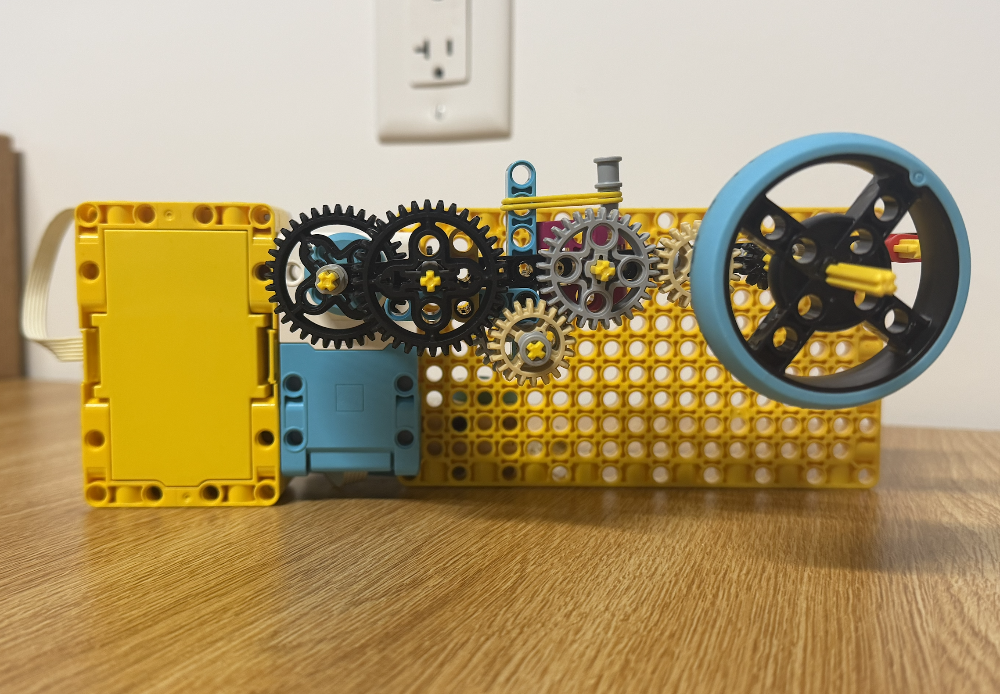
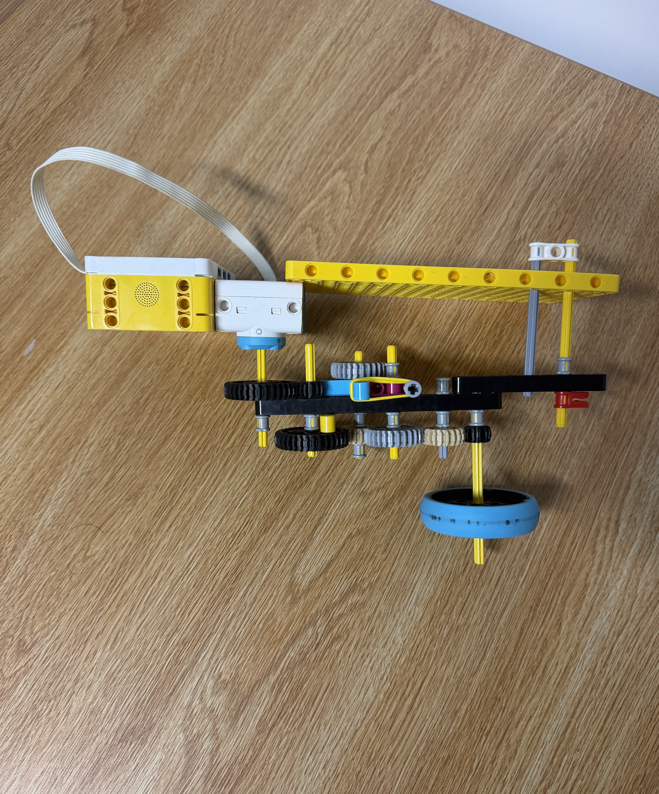

Project Title: High-RPM Compound Gear Top Launcher
Platform: LEGO Engineering / Mechanical Linkages
Core Mechanism: Multi-Stage Compound Gear Train
The goal of this project was to design and build a mechanical launcher capable of spinning a top at high speeds using gear ratios. Because a spinning top requires high angular velocity to achieve gyroscopic stability, a custom multi-stage compound gear train was engineered to multiply human or motor input speed into high-RPM output torque.
